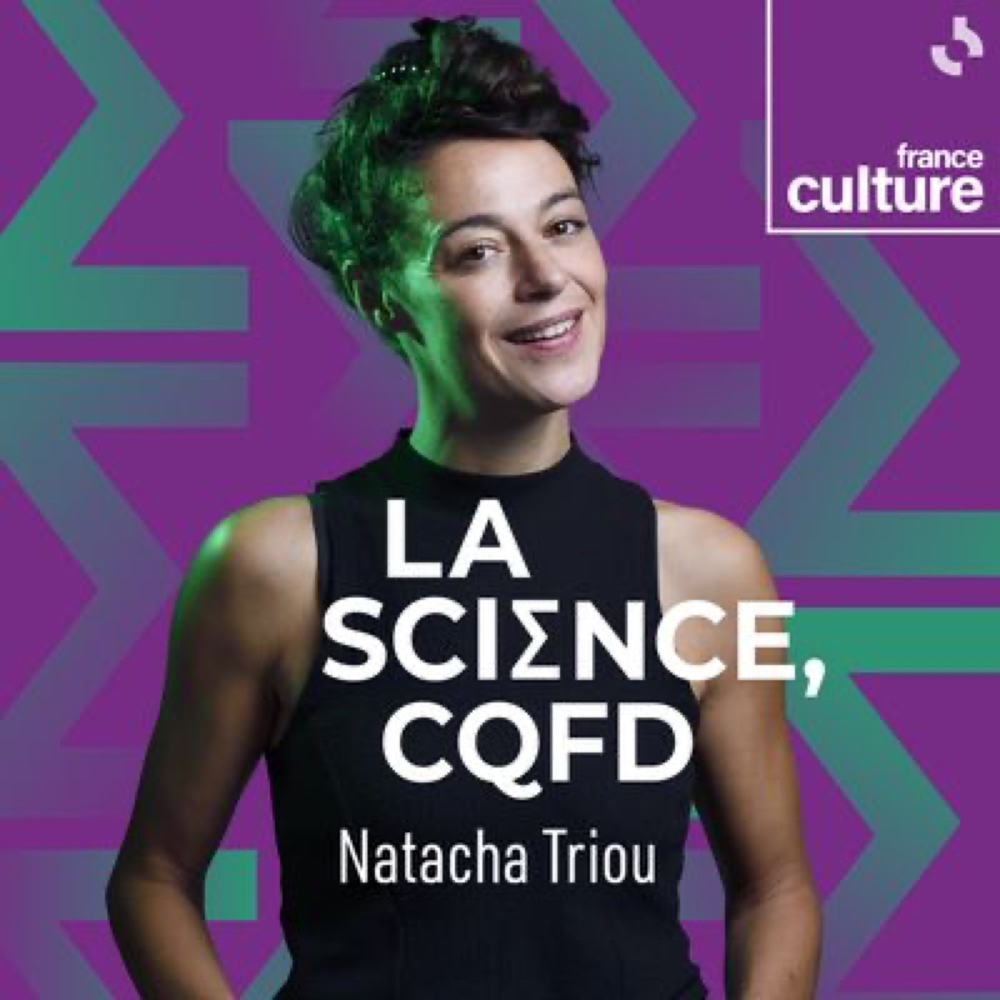
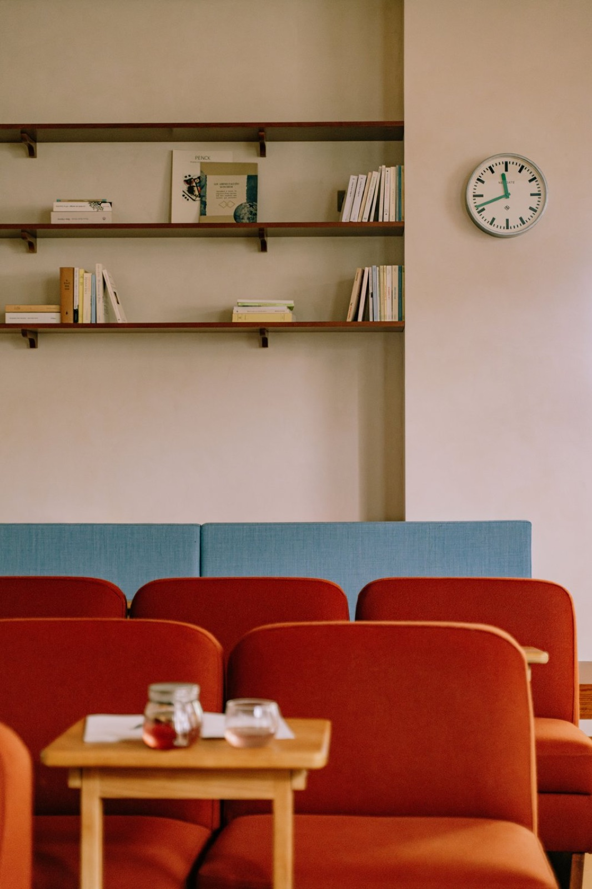
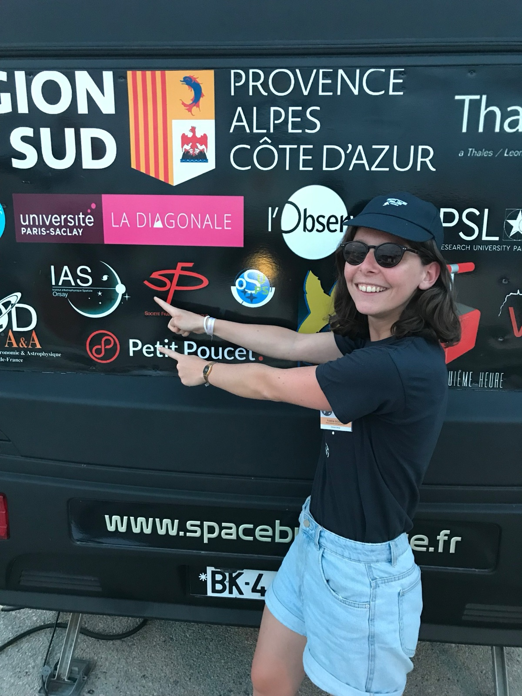
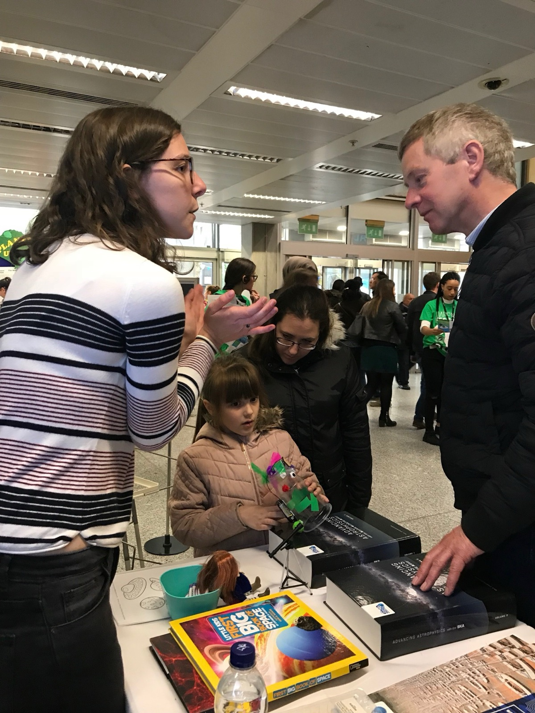
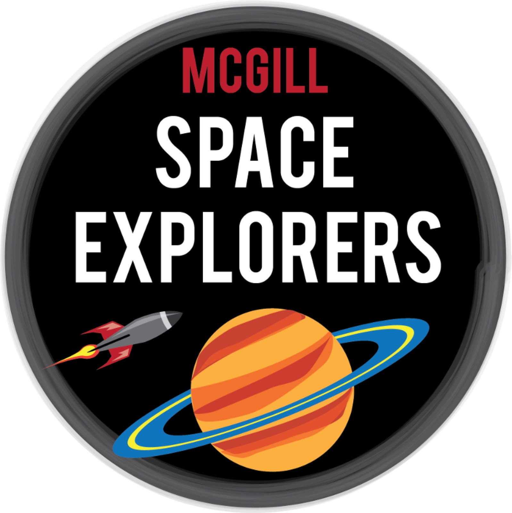
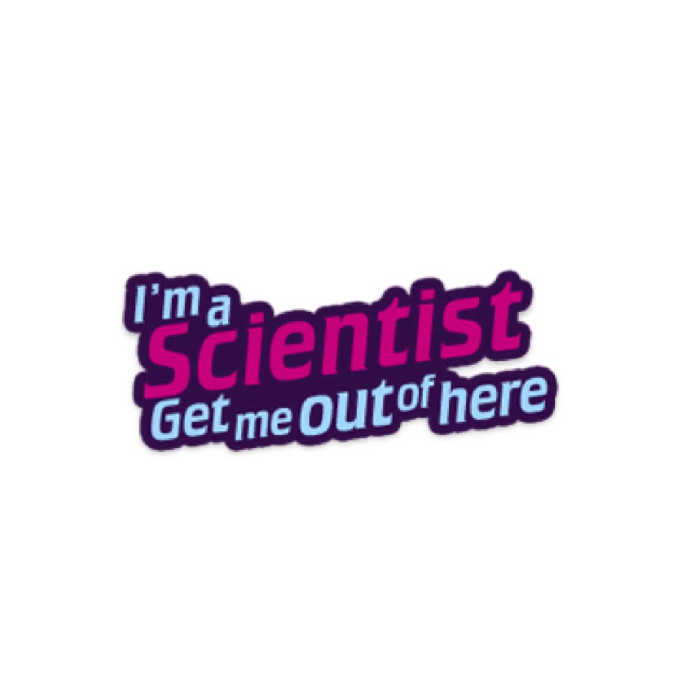
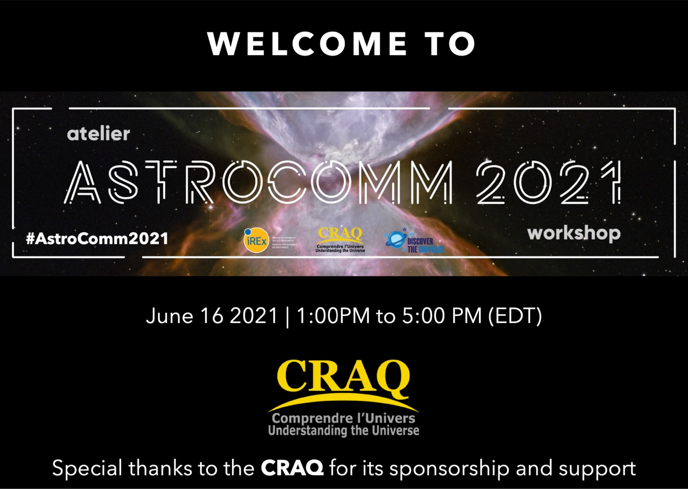

I am involved in many different outreach activities as I believe sharing our knowledge with a wide audience is a central part of the job of a researcher.
La réionisation à la radio !
J'ai participé en avril 2025 sur France Culture à un épisode de l'émission de radio La Science, CQFD, consacré à l'époque de la réionisation. Vous pouvez l'écouter ici.

Off-campus
I contribute to the wonderful off-campus initiative, which offers after-hour lectures to the general public on various topics ranging from geopolitics to astronomy. In the Spring of 2024, I gave two lectures aimed at answering the question "What is the Universe made of?".

AstroMcGill public talk
I had the pleasure of giving the February 2023 AstroMcGill public talk, hosted by the Trottier Space Institute at McGill University, Montreal, Canada. The audience was incredibly engaged, asking and answering each other's questions. If you are based in Montreal, I recommend you attend this monthly talk series!
Congrès des deux infinis
I had the chance to participate in the Congrès des Deux infinis in La Réunion, a French island in the Indian Ocean, in parallel to the 4th world summit on Exploring the Dark Side of the Universe (EDSU 2022), where I was an invited speaker. All French-speaking attendees were encouraged to give talks at local schools. I also took part in a round-table discussion about Women in Science and gave a public talk at the Stella Matutina Museum.
SpaceBus France
Between 2018 and 2020, I was a volunteer for the SpaceBus France, a caravan of professional and amateur astronomers that travels around France in the summer to bring science to holiday-makers. During school terms, we also participate in outreach festivals.

Festivals
I regularly take part in science and outreach festivals (here, the 2018 Imperial Festival in London), introducing the public to my research and to the telescopes I work on, such as the Square Kilometre Array interferometer and the Planck satellite. Both observe different types of light: radio and microwaves, respectively.

McGill Space Explorers
From 2020 to 2023, I was part of the Space Explorers: I frequently visited Québec primary schools to get students involved in hour-long physics activities on, e.g., gravity.

I'm a Scientist
I participated in the 2018 edition of "I'm a Scientist, Get me out of here!", where scientists answer questions from pupils in online chatrooms.

Training
Because communicating science in a positive and impactful way is not innate, I regularly take part in training.
